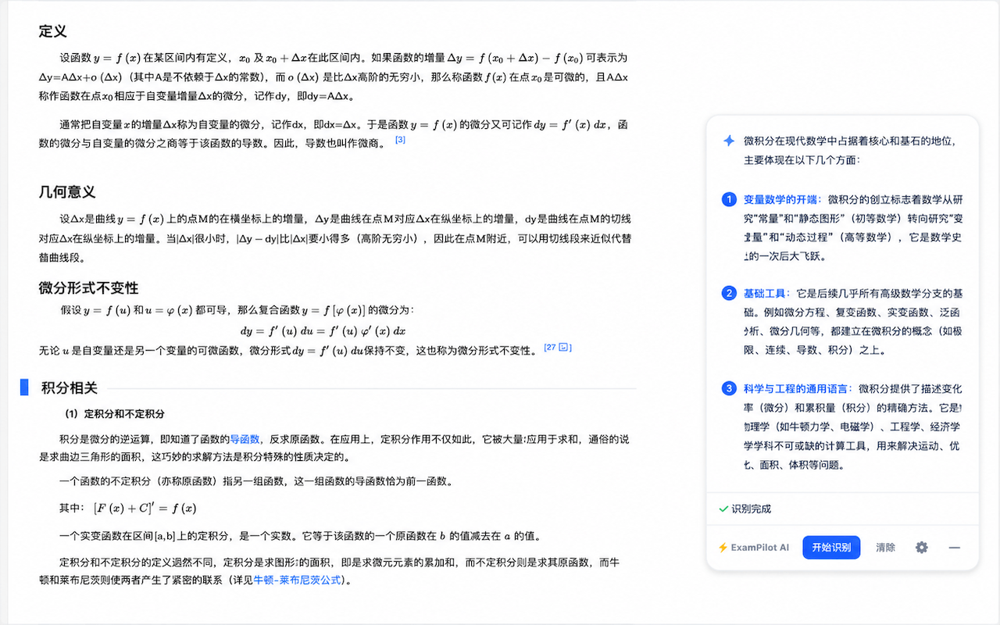

1
选择使用方式
安装 Chrome 扩展并固定到工具栏，或安装桌面应用并确认 ExamPilot 出现在系统托盘。
ExamPilot 同时提供 Chrome 插件与 Tauri 桌面应用。截取当前页面、显示器或框选题目区域，即可把图片发送到你配置的视觉模型；普通模式展示解析，静默模式通过悬浮命中区和剪切板反馈答案。

选择 Chrome 扩展或桌面应用，添加 API 配置后即可开始截图识别。两端配置彼此独立，也可以通过备份文件迁移。
安装 Chrome 扩展并固定到工具栏，或安装桌面应用并确认 ExamPilot 出现在系统托盘。
输入完整 API 地址、支持图片输入的模型名称与 API Key，选择匹配的接口模式。插件点击保存；桌面设置自动保存。
第一次建议关闭静默模式，用一张完整题目的区域截图测试。插件点击“区域”拖拽框选；桌面端按住 Ctrl+Shift+2 移动鼠标后松开。
推荐直接从 Chrome 应用商店安装。开发者也可以构建项目后加载 chrome-extension/dist/chrome/。
进入 ExamPilot 商店页面，点击“添加至 Chrome”，并在浏览器确认窗口中完成安装。
点击浏览器右上角的扩展按钮，在 ExamPilot 旁点击固定图标。之后点击 ExamPilot 图标即可在当前网页呼出面板。
打开任意普通网页后点击扩展图标，右下角会出现悬浮面板。双击页面空白区域可以快速显示或隐藏面板。
插件适合识别普通网页中的题目，只截取当前标签页可见内容，不会截取其他应用窗口，也不是整张长网页截图。
Esc 放弃本次选区；选框太小会被视为误操作并取消。npm install，再运行 npm run chrome:build。chrome://extensions，开启“开发者模式”，点击“加载已解压的扩展程序”。chrome-extension/dist/chrome/；Full Access 版选择 chrome-extension/dist/chrome-full/。选择其中一个，不要加载源码目录。桌面端支持 Windows x64 与 macOS Apple Silicon，通过系统级截图和真实鼠标位置工作，不依赖浏览器扩展。答案窗口配置为置顶并跨工作区显示；是否能覆盖其他应用的全屏界面仍取决于操作系统与全屏方式。
.sig 签名文件或 latest.json。启动 ExamPilot 后，普通模式的答案窗口默认定位到主显示器右下角，系统托盘会出现 ExamPilot 图标。未产生答案时，窗口可能没有可见文字。右键托盘图标并选择“打开设置”，即可进入独立设置窗口。
答案窗口设为置顶、背景透明并支持点击穿透，不会抢走当前应用焦点。答案内容超出显示区域时，使用键盘 ↑/↓ 滚动。
在设置窗口点击“添加配置”，填写配置名称、完整 API 地址、模型名称和 API Key，再选择与服务商匹配的接口模式。桌面设置会自动保存，不需要寻找“保存”按钮；列表中高亮的配置就是当前使用的配置。
普通提示词、静默提示词、答案窗口透明度和静默模式开关都在“识别与界面”中设置；提示词可以随时恢复默认值。
把鼠标移到题目所在显示器，按 Ctrl+Shift+1 截取整个显示器；按住 Ctrl+Shift+2 记录区域起点，移动鼠标后松开即可识别。
截图时答案窗和静默命中层会暂时隐藏，完成后自动恢复。普通模式下，模型答案会直接显示在右下角的置顶透明窗口中。
以下为默认组合键，逐步操作与冲突排查见快捷键详解。
关闭“静默模式”后，答案窗口会显示在桌面右下角并保持置顶。窗口点击穿透，识别完成后可继续操作原来的应用；可在设置中调整答案透明度；界面允许调到 0%，实际会保留最低 1% 可见度，避免窗口完全不可见。
↑/↓ 滚动开启“静默模式”后，普通答案窗口会隐藏。模型返回坐标时，桌面端会创建原生透明命中区域；真实鼠标进入正确选项并短暂停留后，会执行一次轻微反馈。
npm install 和 npm run tauri:dev。构建安装包使用 npm run tauri:build。以下均为默认快捷键。Windows 和 macOS 都使用 Ctrl（Mac 键盘上的 Control / ⌃），不是 Command / ⌘。建议先用主键盘数字行测试。
浏览器插件：切换到题目标签页后按一次，截取该网页当前可见视口并发送给当前模型，不包含整个桌面或网页滚动后才能看到的内容。
桌面应用：把鼠标移到题目所在显示器后按一次，截取该显示器整屏。多显示器时由鼠标位置决定，不是由当前窗口焦点决定。
浏览器插件：按一次组合键后松开，进入页面选区；按住鼠标左键拖拽框选，松开鼠标发送识别。选区中按 Esc 或 Ctrl+Shift+4 可退出。
桌面应用：先把鼠标放到题目一个角，按住 Ctrl+Shift+2 记录起点；保持按住并移动鼠标到对角，再松开组合键记录终点并发送。整个过程不需要按住鼠标左键，也不会显示拖拽遮罩。
桌面选区限制在起点所在显示器；不要跨显示器框选，也不要只轻点组合键而不移动鼠标，否则无法形成有效区域。
浏览器插件：区域选择中退出选区；请求进行中取消当前请求；空闲时清空结果和静默命中区域。
桌面应用：取消当前请求并清空答案和静默命中区域。清除不会删除模型配置、提示词或备份文件；已发送给 API 服务商的请求也不等于撤回，是否计费以服务商规则为准。
Ctrl+Shift+5 隐藏答案窗，或用 Ctrl+Shift+4 清除结果。chrome://extensions/shortcuts，找到 ExamPilot。Ctrl+Shift+1～4 的页面内兜底监听，修改或取消扩展级键位不会同步修改该监听。桌面端当前使用固定的全局组合键，没有快捷键编辑界面，也没有可见的快捷键注册结果列表。请先确认托盘图标存在，暂时停用插件并刷新网页，关闭可能冲突的软件后重启 ExamPilot。macOS 截图还需屏幕录制权限，静默鼠标反馈另需辅助功能权限。Windows 可使用对应的小键盘数字键；小键盘无效时先用主键盘验证。
全局快捷键要求 ExamPilot 正在运行，但不要求设置窗口保持打开；关闭设置窗口不会退出应用。若不再使用，请从系统托盘选择“退出”。
Chrome 扩展点击面板右下角的 ⚙️；桌面应用从系统托盘选择“打开设置”。添加 API 配置后，选择当前要使用的配置。
/v1/chat/completions 结尾；不要只填域名或 /v1，也不要重复拼接路径。插件和桌面端均要求 HTTPS 地址。Bearer 前缀。保存方式：插件编辑完成后点击保存，并在列表中选择要使用的配置；桌面端字段修改会自动保存。两端不会实时同步，需要分别配置或通过备份迁移。
首次测试：先用默认普通提示词和一张清晰、完整的题目截图验证请求，成功后再修改高级参数或开启静默模式。没有自备可用 API 时，仅安装应用无法完成 AI 识别。
以下展示 OpenAI 兼容接口最常见的填写方式。
普通版插件保存配置或开始识别时，会检查 API 域名权限。静默模式遇到跨域 iframe 时，也会检查该 iframe 域名；未授权时，当前页面会显示授权弹层。
接口模式决定请求体和响应解析方式。请以 API 服务商文档中的接口路径与格式为准。
适用于 /v1/chat/completions 及多数 OpenAI 兼容视觉接口。
适用于 OpenAI 风格的 /v1/responses 接口与对应输出结构。
适用于 /v1/messages，图片会按 Anthropic 的 base64 格式发送。
Chrome 扩展使用面板按钮，桌面应用使用全局快捷键。区域识别通常更快，也能减少无关内容对模型判断的干扰。
扩展点击“全屏”截取浏览器当前视口；桌面端按 Ctrl+Shift+1 截取鼠标所在的整个显示器。
扩展点击“区域”或按一次 Ctrl+Shift+2，然后用鼠标左键拖拽框选；桌面端从起点按住 Ctrl+Shift+2，移到对角后松开组合键截图。
静默模式是全局开关，默认关闭。关闭时按普通模式展示答案；开启后会要求 AI 返回结构化 JSON，用于创建悬浮命中区域。
Ctrl+V，macOS 为 Command+V；写入答案会覆盖原剪切板内容。插件：隐藏页面原生光标，移动的是网页中绘制的仿光标，不改变系统鼠标位置；仿光标样式和大小仅影响插件。
桌面端：检测并移动真实系统鼠标，在命中目标内右移后停留，不会自动移回原位置。两端的触发右移量默认 5 像素，可设置为 1–20 的整数；桌面端还会把鼠标限制在命中区内，靠近右边缘时实际位移可能小于设置值。
保持截图布局：命中区来自截图时的位置。插件滚动网页、调整缩放，或桌面端移动题目窗口、切换显示器后，旧坐标可能不再对齐，请重新识别，不要把红框当作模型一定答对的保证。
AI 返回每道题正确答案的百分比坐标。Chrome 扩展会在当前页面创建透明命中区并使用仿光标反馈；桌面端会创建原生命中层并检测真实鼠标悬停。
简答题、填空题、编程题没有可靠的悬浮目标时，提示词要求 AI 不编造坐标，而是返回 clipboardOnly，Chrome 扩展和桌面应用都会把答案写入系统剪切板。
在 ⚙️ 设置的“配置迁移”中，可以把常用模型设置带到另一台设备，或在修改前留一份本地备份。
Chrome 会下载 exampilot-settings-YYYY-MM-DD.json，桌面端会打开文件保存对话框。备份包含全部模型配置、当前选中项、提示词、静默模式设置和界面透明度。
选择 ExamPilot JSON 备份并确认后，应用会校验内容，再替换当前端的全部配置、提示词、静默模式设置与透明度。桌面端兼容扩展导出的 v1 备份。
备份不包含识别结果、模型运行日志或系统权限。它是配置迁移，不是两个应用之间的自动同步。
当服务商需要额外参数时，可以使用 JSON 覆盖；请求结构完全不同则使用自定义模板。
对象会递归合并，数组与基础类型会替换默认值；字段设置为 null 可删除默认字段。
{
"temperature": 0.2,
"max_tokens": 2048,
"stream": false
}常用占位符包括 {{model}}、{{apiKey}}、{{apiKeyBearer}}、{{prompt}}、{{imageUrl}}、{{imageBase64}} 与 {{imageMimeType}}。
{
"Content-Type": "application/json",
"Authorization": "{{apiKeyBearer}}"
}优先检查 API 地址、接口模式和模型是否支持图片输入；普通版插件还需检查 API 域名授权，桌面端则按系统要求检查截图与鼠标控制权限。
先确认使用哪一端。插件按一次组合键后需要鼠标左键拖拽；桌面端采用无拖拽遮罩的两点选区，要在题目一角按住组合键，移动鼠标到对角再松开。桌面端只轻点组合键会得到过小选区。
ExamPilot 的默认截图、切换配置和清除快捷键都使用 Control / ⌃，不是 Command / ⌘。但系统粘贴仍使用 Command+V。插件修改 Chrome 中的快捷键只影响扩展级命令，页面内默认组合键的兜底监听仍然存在。
两端默认组合键相同，插件还有页面内兜底监听，不能保证只修改 Chrome 快捷键就消除冲突。只使用插件时从托盘退出桌面端；只使用桌面端时，在 chrome://extensions 暂时停用插件并刷新已打开的题目网页。
先开启调试框确认是否收到有效坐标，并保持网页滚动、缩放、窗口位置与截图时一致。插件检查跨域 iframe 授权并刷新网页；macOS 桌面端检查辅助功能权限。模型坐标可能不准确，恢复默认静默提示词后重新区域截图测试；桌面端还可在设置底部查看解析错误与命中框数量。
在 Windows 通知区域或 macOS 菜单栏找到 ExamPilot 托盘图标，打开菜单后选择“打开设置”。退出应用也需要使用托盘菜单中的“退出”。
当前界面没有快捷键占用诊断列表。先确认托盘中 ExamPilot 正在运行，使用主键盘和 Control 而非 Command；暂时停用插件并刷新网页，关闭占用 Ctrl+Shift+1/2/3/4/5 的其他软件后重启 ExamPilot。macOS 若按键后无法截图，还需检查屏幕录制权限。
桌面端区域截图不会显示遮盖层。按住 Ctrl+Shift+2（Windows 也可使用小键盘 Num2）时记录鼠标起点，移动鼠标后松开快捷键记录终点并开始识别。
普通模式的答案显示在置顶透明窗口中；静默模式会隐藏该窗口。静默模式只有在模型返回有效选项坐标后才会创建命中区域，并且需要开启“显示静默命中框”才会看到红框。原始返回和解析错误可在设置底部查看。
打开设置窗口，查看底部的“最近一次模型返回 / 错误”。这里会保留最近一次模型正文、请求错误、解析错误和命中框数量，并提供复制与清空按钮。
应用启动后会静默检查最新稳定版。也可以从系统托盘打开“设置”，在“应用更新”区域点击“检查更新”；确认后下载，完成时应用会重启并替换为新版本。Windows 使用 x64 安装包，macOS 仅支持 Apple Silicon。
请确认当前是普通网页，而不是 chrome:// 页面、Chrome 应用商店或浏览器内置 PDF 页面。刷新普通网页后再次点击扩展图标。
在当前网页弹出的 ExamPilot 授权框中点击授权。权限仅针对配置 URL 对应的 HTTPS 域名；如果修改了 API 域名，需要重新授权。
401 通常表示 API Key 无效，403 可能是权限或区域限制，模型不存在则需要核对模型名称。两端均可使用请求预览与服务商文档逐项对照；桌面端还可查看设置底部的最近一次模型返回与错误。
两端都先检查 HTTPS 地址、网络连通性与服务商状态。普通版插件还需确认域名已授权；桌面端由 Rust 发起请求，不受 WebView CORS 限制，不需要 Chrome 域名授权。若服务商按来源或客户端策略限制访问，仍可能拒绝请求。
优先使用区域识别，并完整框选题干、选项、图表和必要上下文。也可以在设置中优化自定义提示词，要求模型给出答案、步骤和简短解释。
静默模式会优先创建页面命中区，通过悬浮和仿光标位移反馈答案；因此不会把选择题完整答案追加到普通答案列表。没有可悬浮目标的简答题、填空题或编程题会把答案复制到剪切板。
红框是“显示静默框”开启后的调试视图，用来查看 AI 返回的百分比坐标是否对齐正确选项。关闭后红框不显示，但透明命中区和仿光标悬浮反馈仍会工作。
这是跨域 iframe 的浏览器权限限制。普通版会显示“授权 iframe 域名”窗口，请授权对应 HTTPS 域名后刷新网页；扩展更新后仅刷新扩展还不够，已注入页面的脚本也需要通过刷新网页更新。Full Access 版可直接覆盖所有可访问的 iframe。
这通常表示模型没有按静默提示词返回约定结构，或返回的百分比不在 0 到 1 范围内。请恢复默认静默提示词，或检查自定义模板的响应提取结果是否为合法 JSON。
在仓库根目录运行 npm run chrome:build 后，请在 Chrome 扩展页加载 chrome-extension/dist/chrome/ 目录，不要选择源码目录。
截图只会发送到你配置的 API 地址。Chrome 扩展把 API Key 与配置保存在浏览器本地存储，桌面端保存在本机 Tauri Store；ExamPilot 本身不提供中转服务。详情请查看隐私政策。
导出文件包含模型配置、提示词、静默模式设置和透明度等，不包含 Chrome 授予扩展的 API 域名权限。换设备或浏览器后，首次使用每个 API 域名时需要重新授权。
不建议。备份是可读的 JSON，其中包含 API Key 以及自定义请求内容。请把它当作密码文件保管；如发生泄露，请立即在 API 服务商处撤销或轮换密钥。
使用过程中遇到问题，请前往 GitHub Issues 问题反馈页面 提交反馈。提交前可以先搜索是否已有相同问题。
GitHub Issues 是公开页面。请勿上传 API Key、完整配置备份、带鉴权信息的请求头，或包含个人隐私的截图。
选择 Chrome 扩展或桌面应用，添加你的视觉模型配置，然后开始截图分析。